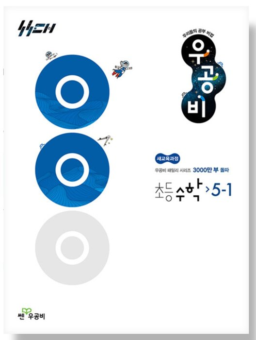
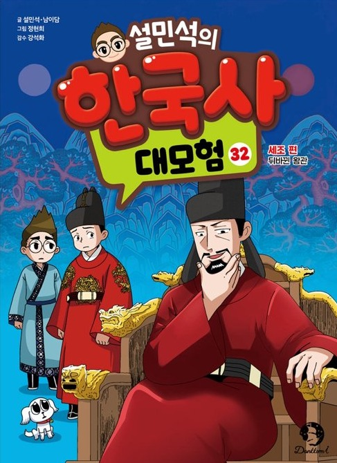

활동 1–2
만들기
아동푸른센터 아이들과 함께 만들고 이야기 나눕니다.
만나는 대상
아동푸른센터에서 생활하는 아동·청소년
서울특별시립 아동푸른센터는 보호가 필요한 아동의 상담·치료·보호·교육과 가정 복귀를 돕고, 학대 피해 아동을 보호하는 서울시립 아동복지시설입니다. 센터가 아동의 정서적 안정을 목표로 두고 있어, 활동도 결과물보다 편하게 이야기 나누는 시간에 중심을 둡니다. 자세히
Nov27금요일
진행 예정만들기 · 활동 1 · 2026년 11월 27일
나만의 계산기 클리커 만들기
기본 계산기에 캐릭터·알파벳 스티커와 입체 파츠를 붙여 꾸밉니다. 화면과 버튼을 가리지 않게 붙이는 법만 안내하고, 디자인은 각자 정합니다. 완성한 계산기는 포장해서 가져갑니다.
- 시간
- 90분
- 참여
- 11명
- 멘토
- 7명
- 장소
- 아동푸른센터
진행 순서
10분인사와 아이스브레이킹. 좋아하는 캐릭터와 색 이야기하기10분재료 소개, 꾸미기 예시 보기, 디자인 정하기45분스티커와 파츠로 계산기 꾸미기15분완성한 계산기 소개10분포장, 사용할 때 주의할 점 안내, 정리와 소감
Dec07월요일
예정만들기 · 활동 2 · 2026년 12월 7일
크런치 말랑이 만들기
멘토가 먼저 만드는 과정을 보여 주고, 참여자가 한 사람당 한 세트씩 따라 만듭니다. 기본 형태를 만든 뒤 크런치 재료를 넣고 꾸밉니다. 재료가 굳는 시간은 멘토들이 미리 만들어 보고 확인합니다.
- 시간
- 90분
- 참여
- 협의 중
- 멘토
- 7명
- 장소
- 아동푸른센터
진행 순서
10분프로그램 소개, 완성품과 만드는 순서 보기10분멘토의 제작 시범25분기본 형태 만들기20분크런치 재료 넣고 꾸미기15분마감 상태 확인, 이름 적고 개별 포장10분완성품 전달, 소감 나누기, 정리
활동 3–4
나눔
지역아동센터를 찾아가 센터가 요청한 책을 전달하고, 아이들과 이야기를 나눕니다.
여러 지역아동센터를 찾아가 필요한 물품을 기부하는 활동입니다. 물건만 건네지 않고, 아이들과 이야기도 나눕니다.
Dec04금요일
예정나눔 · 활동 3 · 2026년 12월 4일

우공비 문제집 나눔
망원무지개지역아동센터에 필요한 물품을 먼저 물어보고, 그에 맞춰 고른 우공비 문제집을 기부합니다. 전달하는 날에는 아이들과 이야기도 나눕니다.
- 날짜
- 12월 4일
- 나누는 것
- 우공비 문제집
- 고른 기준
- 센터 요청
- 장소
- 망원무지개지역아동센터
진행 순서
문의센터에 필요한 물품 물어보기준비요청에 맞춰 문제집 고르고 구매12.4센터를 찾아가 문제집 전달, 아이들과 이야기 나누기기록전달 사진과 나눈 대화를 아카이브에 기록
이어지는 배경 · 학습 자원의 차이 (소득 구간별 사교육비 3.4배)

만화책 나눔
지역아동센터에 만화책을 기부하는 활동을 준비하고 있습니다. 날짜와 장소는 확정되면 공개합니다.
이어지는 배경 · 친구와 어울리는 방과 후 시간 (희망 42.9%, 실제 18.6%)